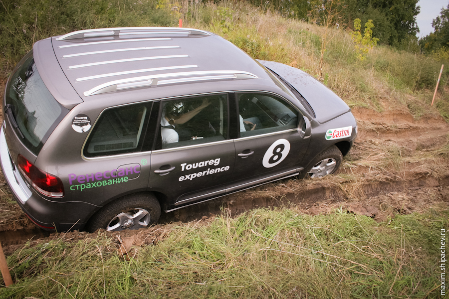

Эта история, уверен, не оставит тебя равнодушным. К сожалению, её финал — скорее исключение, чем правило. Возможно, после того, как её прочитает побольше людей, такие истории исключениями быть перестанут.
В 2008 году мой друг, после тест-драйва купил не самый дешёвый автомобиль Volkswagen Touareg. Купил у тогдашнего дилера — Кузбасс-Евро-Моторс.
После 20 тысяч километров пробега у автомобился обнаружился существенный недостаток. Автомобиль, мягко говоря, перестал нормально заводиться. Мог крутить стартером минуту для завода, мог и вовсе не завестись.
На сервисе того самого дилера были категоричны — корова не моя, некачественный бензин, ничего не знаем. А спустя какое-то время с Кузбасс-Евро-Моторс вовсе случилась тёмная история, после чего историей стал он сам.
Всех покупателей перевели на обслуживание к томскому дилеру, куда мой друг и продолжал ездить. 2 года. Два раза в месяц.
До конца гарантии оставалось 3 месяца, когда мой друг понял, что его проблема никому кроме него не интересна. Варианта оставалось два: забыть и простить или бороться и идти в суд. Мой друг выбрал второй. И пошёл в суд.
Первый суд был проигран. Уверенности в победе не было до самого конца, несмотря на то, что уже второе заседание закончилось в пользу моего друга. А впереди было ещё больше 20! судебных заседаний, многочисленные экспертизы и аппеляции производителя. Из-за невозможности проводить своё рабочее время в здании суда был нанят адвокат.
Через почти 5 лет судебных тяжб справедливость всё же повернулась лицом.
С ответчика (Фольксваген Груп Рус) взыскано в пользу истца двукратная стоимость автомобиля + ещё 50% стоимости в качестве госпошлины, которая, в связи с изменениями в Законе о защите прав потребителей тоже направляется истцу.
20% + 250 тысяч рублей достаются адвокату, от которого мой друг в общем-то не в восторге.
p.s. Да, ты всё правильно посчитал. 5 лет нервов компенсированы именно этой суммой.
